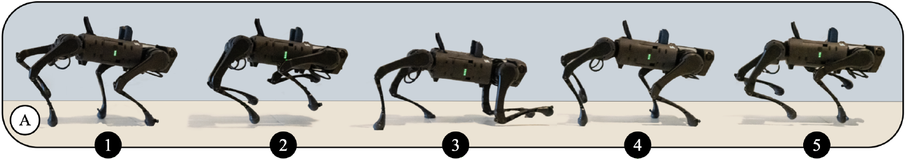

(1) University of California, Berkeley(2) Google Brain

Abstract
Training a high-dimensional simulated agent with an under-specified
reward function often leads the agent to learn physically infeasible
strategies that are ineffective when deployed in the real world. To
mitigate these unnatural behaviors, reinforcement learning
practitioners often utilize complex reward functions that encourage
physically plausible behaviors. However, a tedious labor-intensive
tuning process is often required to create hand-designed rewards
which might not easily generalize across platforms and tasks. We
propose substituting complex reward functions with “style rewards”
learned from a dataset of motion capture demonstrations. A learned
style reward can be combined with an arbitrary task reward to train
policies that perform tasks using naturalistic strategies. These
natural strategies can also facilitate transfer to the real world.
We build upon Adversarial Motion Priors – an approach from the
computer graphics domain that encodes a style reward from a dataset
of reference motions – to demonstrate that an adversarial approach
to training policies can produce behaviors that transfer to a real
quadrupedal robot without requiring complex reward functions. We
also demonstrate that an effective style reward can be learned
from a few seconds of motion capture data gathered from a German
Shepherd and leads to energy-efficient
@article{Escontrela22_amp_style_reward,
author = {Escontrela, Alejandro and Peng, Xue Bin and Yu, Wenhao and Zhang, Tingnan and Iscen, Atil and Goldberg, Ken and Abbeel, Pieter},
title = {Adversarial Motion Priors Make Good Substitutes for Complex Reward Functions}
}